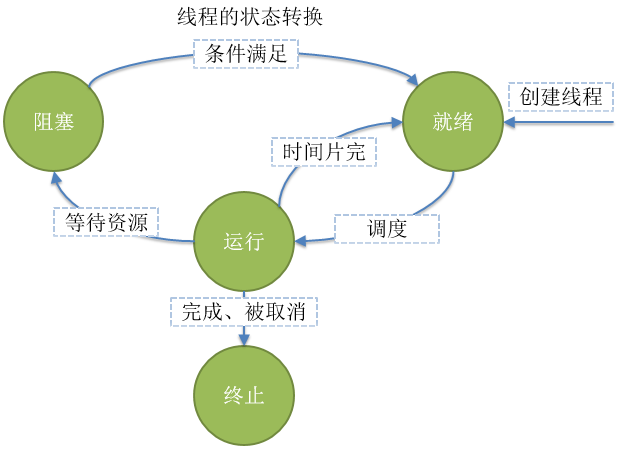

并发和并行区别
并行，parallel
并发，concurrency
举例
并行不过是使用水平扩展方式解决并发的一种手段而已
进程和线程
进程（Process）是计算机中的程序关于某数据集合上的一次运行活动，是系统进行资源分配和调度的基本单位，是操作系统结构的基础。
进程和程序的关系：程序是源代码编译后的文件，而这些文件存放在磁盘上。当程序被操作系统加载到内存中，就是进程，进程中存放着指令和数据（资源）。一个程序的执行实例就是一个进程。它也是线
Linux进程有父进程、子进程，Windows的进程是平等关系。
在实现了线程的操作系统中，线程是操作系统能够进行运算调度的最小单位。它被包含在进程之中，是进程中的实际运作单位。
线程，有时被称为轻量级进程(Lightweight Process，LWP），是程序执行流的最小单元。一个标准的线程由线程ID，当前指令指针(PC）、寄存器集合和堆、栈组成。
在许多系统中，创建一个线程比创建一个进程快10-100倍。
进程、线程的理解
现代操作系统提出进程的概念，每一个进程都认为自己独占所有的计算机硬件资源。
线程的状态
状态
含义
就绪(Ready)
线程能够运行，但在等待被调度。可能线程刚刚创建启动，或刚刚从阻塞中恢复，或者被其他线程抢占
运行(Running)
线程正在运行
阻塞(Blocked)
线程等待外部事件发生而无法运行，如I/O操作
终止(Terminated)
线程完成，或退出，或被取消

Python中的进程和线程
运行程序会启动一个解释器进程，线程共享一个解释器进程
线程
Python的线程开发使用标准库threading。
进程靠线程执行代码，至少有一个主线程，其它线程是工作线程。
父线程：如果线程A中启动了一个线程B，A就是B的父线程。
Thread类
1 2 3 def __init__ (self, group=None , target=None , name=None , args=(None , *, daemon=None )
参数名
含义
target
线程调用的对象，就是目标函数
name
为线程起个名字
args
为目标函数传递实参，元组
kwargs
为目标函数关键字传参，字典
线程启动
1 2 3 4 5 6 7 8 9 10 11 12 import threadingdef worker (): print ("I'm working" ) print ('Fineshed' ) t = threading.Thread(target=worker, name='worker' ) t.start()
通过threading.Thread创建一个线程对象，target是目标函数，可以使用name为线程指定名称。
线程之所以执行函数，是因为线程中就是要执行代码的，而最简单的代码封装就是函数，所以还是函数调用。
那么，如果不让线程退出，或者让线程一直工作怎么办呢？
1 2 3 4 5 6 7 8 9 10 11 12 13 14 15 import threadingimport timedef worker (): while True : time.sleep(0.5 ) print ("I'm working" ) print ('Fineshed' ) t = threading.Thread(target=worker, name='worker' ) t.start() print ('=' * 30 )
线程退出
Python没有提供线程退出的方法，线程在下面情况时退出
1 2 3 4 5 6 7 8 9 10 11 12 13 14 15 16 17 18 19 import threadingimport timedef worker (): for i in range (10 ): time.sleep(0.5 ) if i > 5 : raise RuntimeError print ('I am working' ) print ('finished' ) t = threading.Thread(target=worker, name='worker' ) t.start() print ('=' * 30 )
Python的线程没有优先级、没有线程组的概念，也不能被销毁、停止、挂起，那也就没有恢复、中断了
线程的传参
1 2 3 4 5 6 7 8 9 10 11 12 13 14 15 16 17 import threadingimport timedef add (x, y ): print ('{} + {} = {}' .format (x, y, x + y, threading.current_thread().ident)) t1 = threading.Thread(target=add, name='add' , args=(4 , 5 )) t1.start() time.sleep(2 ) t2 = threading.Thread(target=add, name='add' , args=(6 ,), kwargs={'y' : 7 }) t2.start() time.sleep(2 ) t3 = threading.Thread(target=add, name='add' , kwargs={'x' : 8 , 'y' : 9 }) t3.start()
线程传参和函数传参没什么区别，本质上就是函数传参
threading的属性和方法
名称
含义
current_thread()
返回当前线程对象
main_thread()
返回主线程对象
active_count()
当前处于alive状态的线程个数
enumerate()
返回所有活着的线程的列表，不包括已经终止的线程和未开始的线程
get_ident()
返回当前线程的ID，非0整数
active_count、enumerate方法返回的值还包括主线程
1 2 3 4 5 6 7 8 9 10 11 12 13 14 15 16 17 18 19 20 21 22 23 24 import threadingimport timedef showtreadinfo (): print ('current thread = {}\nmain thread = {}\nactive count = {}' .format (threading.current_thread(), threading.main_thread(), threading.active_count())) def worker (): showtreadinfo() for i in range (5 ): time.sleep(1 ) print ('i am working' ) print ('finished' ) t = threading.Thread(target=worker, name='worker' ) showtreadinfo() time.sleep(1 ) t.start() print ('===end===' )
Thread实例的属性和方法
名称
含义
name
只是一个名字，只是个标识，名称可以重名。getName()、setName()获取、设置这个名词
ident
线程ID，它是非0整数。线程启动后才会有ID，否则为None。线程退出，此ID依旧可以访问。此ID可以重复使用
is_alive()
返回线程是否活着
::: warning
start和run方法
1 2 3 4 5 6 7 8 9 10 11 12 13 14 15 16 17 18 19 20 21 22 23 24 25 26 27 import threadingimport timedef worker (): for i in range (5 ): time.sleep(1 ) print ('I am working' ) print ('finished' ) class MyThread (threading.Thread): def start (self ): print ('start~~~~' ) super ().start() def run (self ): print ('run~~~~~~' ) super ().run() t = MyThread(target=worker, name='worker' ) t.start() t.start()
尝试start两次，或run两次都失败了，但是它们抛出的异常不一样。
但是单独运行start或者run都可以，是否可以不需要start方法了吗？在worker中打印线程名称、id。
1 2 3 4 5 6 7 8 9 10 11 12 13 14 15 16 17 18 19 20 21 22 23 24 25 import threadingimport timedef worker (): t = threading.current_thread() for i in range (5 ): time.sleep(1 ) print ('I am working' , t.name, t.ident) print ('finished' ) class MyThread (threading.Thread): def start (self ): print ('start~~~~' ) super ().start() def run (self ): print ('run~~~~~~' ) super ().run() t = MyThread(target=worker, name='worker' ) t.start()
start方法才能启动操作系统线程，并运行run方法。run方法内部调用了目标函数
多线程
顾名思义，多个线程，一个进程中如果有多个线程运行，就是多线程，实现一种并发。
1 2 3 4 5 6 7 8 9 10 11 12 13 14 15 16 17 18 import sysimport threadingimport timedef worker (f=sys.stdout ): t = threading.current_thread() for i in range (5 ): time.sleep(1 ) print ('i am working' , t.name, t.ident, file=f) print ('finished' , file=f) t1 = threading.Thread(target=worker, name='worker1' ) t2 = threading.Thread(target=worker, name='worker2' , args=(sys.stderr,)) t1.start() t2.start()
可以看到worker1和work2交替执行。
当使用start方法启动线程后，进程内有多个活动的线程并行的工作，就是多线程。
一个进程中至少有一个线程，并作为程序的入口，这个线程就是主线程。
其他线程称为工作线程
线程安全
多线程执行一段代码，不会产生不确定的结果，那这段代码就是线程安全的。
多线程在运行过程中，由于共享同一进程中的数据，多线程并发使用同一个数据，那么数据就有可能被相互修改，从而导致某些时刻无法确定这个数据的值，最终随着多线程运行，运行结果不可预期，这就是线程不安全。
daemon线程
注：有人翻译成后台线程，也有人翻译成守护线程。
Python中，构造线程的时候，可以设置daemon属性，这个属性必须在start方法前设置好。
1 2 3 4 5 if daemon is not None : self._daemonic = daemon else : self._daemonic = current_thread().daemon
线程daemon属性，如果设定就是用户的设置，否则就取当前线程的daemon值。
1 2 3 class _MainThread (Thread ): def __init__ (self ): Thread.__init__(self, name="MainThread" , daemon=False )
1 2 3 4 5 6 7 8 9 10 11 12 13 14 15 import threadingimport timedef foo (): time.sleep(5 ) for i in range (20 ): print (i) t = threading.Thread(target=foo, daemon=False ) t.start() print ('Main Thread Exits' )
发现线程t依然执行，主线程已经执行完，但是一直等着线程t。
名称
含义
daemon属性
表示线程是否是daemon线程，这个值必须在start()之前设置，否则引发RuntimeError异常
isDaemon()
是否是daemon线程
setDaemon
设置为daemon线程，必须在start方法之前设置
看一个例子，，看看主线程何时结束daemon线程
1 2 3 4 5 6 7 8 9 10 11 12 13 14 15 16 import threadingimport timedef worker (name, timeout ): time.sleep(timeout) print ('{} working' .format (name)) t1 = threading.Thread(target=worker, args=('t1' , 5 ), daemon=True ) t1.start() t2 = threading.Thread(target=worker, args=('t2' , 10 ), daemon=False ) t2.start() print ('Main Thread Exits' )
上例说明，如果还有non-daemon线程在运行，进程不结束，进程也不会杀掉其它所有daemon线程。
直到所有non-daemon线程全部运行结束（包括主线程），不管有没有daemon线程，程序退出
总结
线程具有一个daemon属性，可以手动设置为True或False，也可以不设置，则取默认值None
如果不设置daemon，就取当前线程的daemon来设置它
主线程是non-daemon线程，即daemon = False
从主线程创建的所有线程的不设置daemon属性，则默认都是daemon = False，也就是nondaemon线程
Python程序在没有活着的non-daemon线程运行时，程序退出，也就是除主线程之外剩下的只能
都是daemon线程，主线程才能退出，否则主线程就只能等待
join方法
先看一个简单的例子，看看效果
1 2 3 4 5 6 7 8 9 10 11 12 13 14 import threadingimport timedef worker (name, timeout ): time.sleep(timeout) print ('{} working' .format (name)) t1 = threading.Thread(target=worker, args=('t1' , 3 ), daemon=True ) t1.start() t1.join() print ('Main Thread Exits' )
使用了join方法后，当前线程阻塞了，daemon线程执行完了，主线程才退出了
1 2 3 4 5 6 7 8 9 10 11 12 13 14 15 16 17 import threadingimport timedef worker (name, timeout ): time.sleep(timeout) print ('{} working' .format (name)) t1 = threading.Thread(target=worker, args=('t1' , 10 ), daemon=True ) t1.start() t1.join(2 ) print ('~~~~~~~~~~~' )t1.join(2 ) print ('~~~~~~~~~~~' )print ('Main Thread Exits' )
join(timeout=None)
join方法是线程的标准方法之一
一个线程中调用另一个线程的join方法，调用者将被阻塞，直到被调用线程终止，或阻塞超时
一个线程可以被join多次
timeout参数指定调用者等待多久，没有设置超时，就一直等到被调用线程结束
调用谁的join方法，就是join谁，就要等谁
daemon线程应用场景
主要应用场景有：
后台任务。如发送心跳包、监控，这种场景最多
主线程工作才有用的线程。如主线程中维护这公共的资源，主线程已经清理了，准备退出，而工作线程使用这些资源工作也没有意义了，一起退出最合适
随时可以被终止的线程
如果主线程退出，想所有其它工作线程一起退出，就使用daemon=True来创建工作线程。
daemon线程，简化了程序员手动关闭线程的工作。
threading.local类
1 2 3 4 5 6 7 8 9 10 11 12 13 14 15 16 17 18 19 import loggingimport threadingimport timeFORMAT = "%(asctime)s %(threadName)s %(thread)d %(message)s" logging.basicConfig(format =FORMAT, level=logging.INFO) def worker (): x = 0 for i in range (100 ): time.sleep(0.0001 ) x += 1 logging.info(x) for i in range (10 ): threading.Thread(target=worker, name='t-{}' .format (i)).start()
上例使用多线程，每个线程完成不同的计算任务。
能否改造成使用全局变量完成?
python提供 threading.local 类，将这个类实例化得到一个全局对象，但是不同的线程使用这个对象存储的数据其他线程看不见。
1 2 3 4 5 6 7 8 9 10 11 12 13 14 15 16 17 18 19 20 21 import loggingimport threadingimport timeFORMAT = "%(asctime)s %(threadName)s %(thread)d %(message)s" logging.basicConfig(format =FORMAT, level=logging.INFO) global_data = threading.local() def worker (): global_data.x = 0 for i in range (100 ): time.sleep(0.0001 ) global_data.x += 1 logging.info(global_data.x) for i in range (10 ): threading.Thread(target=worker, name='t-{}' .format (i)).start()
结果显示和使用局部变量的效果一样。
线程同步
线程同步，线程间协同，通过某种技术，让一个线程访问某些数据时，其他线程不能访问这些数据，直到该线程完成对数据的操作。
Event ***
Event事件，是线程间通信机制中最简单的实现，使用一个内部的标记flag，通过flag的True或False的变化来进行操作。
名称
含义
set()
标记设置为True
clear()
标记设置为False
is_set()
标记是否为True
ewait(timeout=None)
设置等待标记为True的时长，None为无限等待。等到返回True，未等到超时了返回False
练习
老板雇佣了一个工人，让他生产杯子，老板一直等着这个工人，直到生产了10个杯子
1 2 3 4 5 6 7 8 9 10 11 12 13 14 15 16 17 18 19 20 21 22 23 24 25 26 27 28 29 30 31 32 33 import loggingimport timefrom threading import Event, ThreadFORMAT = '%(asctime)s %(threadName)s %(thread)s %(message)s' logging.basicConfig(format =FORMAT, level=logging.INFO) def boss (event: Event ): logging.info("I'm boss, waiting for U" ) event.wait() logging.info('Good Job.' ) def worker (event: Event, count=10 ): logging.info('I am working for U' ) cups = [] while True : logging.info('make 1 cup' ) time.sleep(0.5 ) cups.append(1 ) if len (cups) >= count: event.set () break logging.info('I finished my job. cups={}' .format (cups)) event = Event() b = Thread(target=boss, name='boss' , args=(event,)) w = Thread(target=worker, name='worker' , args=(event,)) b.start() w.start()
总结
需要使用同一个Event对象的标记flag。
Lock ***
Lock类是mutex互斥锁
一旦一个线程获得锁，其它试图获取锁的线程 将被阻塞，只到拥有锁的线程释放锁
凡是存在共享资源争抢的地方都可以使用锁，从而保证只有一个使用者可以完全使用这个资源。
名称
含义
acquire(blocking=True,timeout=-1)
默认阻塞，阻塞可以设置超时时间。非阻塞时，timeout禁止设置。
release()
释放锁。可以从任何线程调用释放。
锁的基本使用
1 2 3 4 5 6 7 8 9 10 11 12 13 14 15 16 17 18 19 20 21 22 23 24 25 26 27 28 29 30 import threadinglock = threading.Lock() lock.acquire() print ('-' * 30 )def worker (l ): print ('worker start' , threading.current_thread()) l.acquire() print ('worker done' , threading.current_thread()) for i in range (10 ): threading.Thread(target=worker, name="w{}" .format (i), args=(lock,), daemon=True ).start() print ('-' * 30 )while True : cmd = input (">>>" ) if cmd == 'r' : lock.release() print ('released one locker' ) elif cmd == 'quit' : lock.release() break else : print (threading.enumerate ()) print (lock.locked())
上例可以看出不管在哪一个线程中，只要对一个已经上锁的锁发起阻塞地请求，该线程就会阻塞。
练习
1 2 3 4 5 6 7 8 9 10 11 12 13 14 15 16 17 18 19 20 21 22 23 24 25 26 27 28 29 30 31 32 33 import loggingimport timefrom threading import Thread, LockFORMAT = "%(asctime)s %(threadName)s %(thread)d %(message)s" logging.basicConfig(format =FORMAT, level=logging.INFO) cups = [] lock = Lock() def worker (count=1000 ): logging.info("I'm working" ) while True : lock.acquire() if len (cups) >= count: break time.sleep(0.0001 ) cups.append(1 ) lock.release() logging.info('I finished my job. cups = {}' .format (len (cups))) for i in range (1 , 11 ): t = Thread(target=worker, name="w{}" .format (i), args=(1000 ,)) t.start() for i in range (1 , 11 ): t = Thread(target=worker, name="w{}" .format (i), args=(1000 ,)) t.start()
上下文支持
锁是典型必须释放的，Python提供了上下文支持。查看Lock类的上下文方法，__enter__方法返回bool
表示是否获得锁，__exit__方法中释放锁。
由此上例可以修改为
1 2 3 4 5 6 7 8 9 10 11 12 13 14 15 16 17 18 19 20 21 22 23 24 25 26 27 import loggingimport timefrom threading import Thread, LockFORMAT = "%(asctime)s %(threadName)s %(thread)d %(message)s" logging.basicConfig(format =FORMAT, level=logging.INFO) cups = [] lock = Lock() def worker (count=1000 ): logging.info("I'm working" ) while True : with lock: if len (cups) >= count: logging.info('leaving' ) break time.sleep(0.0001 ) cups.append(1 ) logging.info(lock.locked()) logging.info('I finished my job. cups = {}' .format (len (cups))) for i in range (1 , 11 ): t = Thread(target=worker, name="w{}" .format (i), args=(1000 ,)) t.start()
感觉一下正确得到结果了吗？感觉到了执行速度了吗？慢了还是快了，为什么？
锁的应用场景
锁适用于访问和修改同一个共享资源的时候，即读写同一个资源的时候。
如果全部都是读取同一个共享资源需要锁吗？
使用锁的注意事项：
少用锁，必要时用锁。使用了锁，多线程访问被锁的资源时，就成了串行，要么排队执行，要么争抢执行
举例，高速公路上车并行跑，可是到了省界只开放了一个收费口，过了这个口，车辆依然可以
加锁时间越短越好，不需要就立即释放锁
一定要避免死锁
不使用锁，有了效率，但是结果是错的。
Queue的线程安全
标准库queue模块，提供FIFO的Queue、LIFO的队列、优先队列。
1 2 3 4 5 6 import queueq = queue.Queue(8 ) if q.qsize() == 7 : q.put() if q.qsize() == 1 : q.get()
如果不加锁，是不可能获得准确的大小的，因为你刚读取到了一个大小，还没有取走数据，就有可能被其他线程改了。
Queue类的size虽然加了锁，但是，依然不能保证立即get、put就能成功，因为读取大小和get、put方法是分开的
GIL全局解释器锁
Python 在解释器进程级别有一把锁，叫做GIL，即全局解释器锁。
CPython中
IO密集型，某个线程阻塞，GIL会释放，就会调度其他就绪线程
CPU密集型，当前线程可能会连续的获得GIL，导致其它线程几乎无法使用CPU
在CPython中由于有GIL存在，IO密集型，使用多线程较为合算；CPU密集型，使用多进程，要绕开GIL
新版CPython正在努力优化GIL的问题，但不是移除。
::: tip
保留GIL的原因：
测试下面2个程序，请问下面的程序是计算密集型还是IO密集型？
1 2 3 4 5 6 7 8 9 10 11 12 13 14 15 16 17 18 19 20 21 import datetimeimport logginglogging.basicConfig(level=logging.INFO, format ="%(thread)s %(message)s" ) start = datetime.datetime.now() def calc (): sum = 0 for _ in range (1000000000 ): sum += 1 calc() calc() calc() calc() delta = (datetime.datetime.now() - start).total_seconds() logging.info(delta)
1 2 3 4 5 6 7 8 9 10 11 12 13 14 15 16 17 18 19 20 21 22 23 24 25 26 27 28 29 import datetimeimport loggingimport threadinglogging.basicConfig(level=logging.INFO, format ="%(thread)s %(message)s" ) start = datetime.datetime.now() def calc (): sum = 0 for _ in range (1000000000 ): sum += 1 t1 = threading.Thread(target=calc) t2 = threading.Thread(target=calc) t3 = threading.Thread(target=calc) t4 = threading.Thread(target=calc) t1.start() t2.start() t3.start() t4.start() t1.join() t2.join() t3.join() t4.join() delta = (datetime.datetime.now() - start).total_seconds() logging.info(delta)
注意，不要在代码中出现print等访问IO的语句。访问IO，线程阻塞，会释放GIL锁，其他线程被调度。
程序1是单线程程序，所有calc()依次执行，根本就不是并发。在主线程内，函数串行执行。
从两段程序测试的结果来看，CPython中多线程根本没有任何优势，和一个线程执行时间相当。因为GIL
多进程
由于Python的GIL全局解释器锁存在，多线程未必是CPU密集型程序的好的选择。
multiprocessing
Process类
Process类遵循了Thread类的API，减少了学习难度。
先看一个例子，前面介绍的单线程、多线程比较的例子的多进程版本
1 2 3 4 5 6 7 8 9 10 11 12 13 14 15 16 17 18 19 20 21 22 23 24 25 26 27 import datetimeimport multiprocessingdef calc (i ): sum = 0 for _ in range (1000000000 ): sum += 1 return i, sum if __name__ == '__main__' : start = datetime.datetime.now() ps = [] for i in range (4 ): p = multiprocessing.Process(target=calc, args=(i,), name='calc-{}' .format (i)) ps.append(p) p.start() for p in ps: p.join() print (p.name, p.exitcode) delta = (datetime.datetime.now() - start).total_seconds() print (delta) for p in ps: print (p.name, p.exitcode) print ('===end====' )
对于上面这个程序，在同一主机上运行时长的对比
看到了多个进程都在使用CPU，这是真并行，而且进程库几乎没有什么学习难度
注意：多进程代码一定要放在 __name__ == "__main__" 下面执行。
名称
说明
pid
进程id
exitcode
进程的退出状态码
terminate()
终止指定的进程
进程间同步
Python在进程间同步提供了和线程同步一样的类，使用的方法一样，使用的效果也类似。
multiprocessing还提供共享内存、服务器进程来共享数据，还提供了用于进程间通讯的Queue队列、
通信方式不同
多进程就是启动多个解释器进程，进程间通信必须序列化、反序列化
数据的线程安全性问题
多进程、多线程的选择
CPU密集型
IO密集型
应用
请求/应答模型：WEB应用中常见的处理模型
master启动多个worker工作进程，一般和CPU数目相同。发挥多核优势。
concurrent.futures包
3.2版本引入的模块。
异步并行任务编程模块，提供一个高级的异步可执行的便利接口。
提供了2个池执行器：
ThreadPoolExecutor 异步调用的线程池的Executor
ProcessPoolExecutor 异步调用的进程池的Executor
ThreadPoolExecutor对象
首先需要定义一个池的执行器对象，Executor类的子类实例
方法
含义
ThreadPoolExecutor(max_workers=1)
池中至多创建max_workers个线程的池来同时异步执行，返回Executor实例
submit(fn, *args, **kwargs)
提交执行的函数及其参数，如有空闲开启daemon线程，返回Future类的实例
shutdown(wait=True)
清理池，wait表示是否等待到任务线程完成
Future类
方法
含义
done()
如果调用被成功的取消或者执行完成，返回True
cancelled()
如果调用被成功的取消，返回True
running()
如果正在运行且不能被取消，返回True
cancel()
尝试取消调用。如果已经执行且不能取消返回False，否则返回True
result(timeout=None)
取返回的结果，timeout为None，一直等待返回；timeout设置到期，抛出concurrent.futures.TimeoutError 异常
exception(timeout=None)
取返回的异常，timeout为None，一直等待返回；timeout设置到期，抛出concurrent.futures.TimeoutError 异常
1 2 3 4 5 6 7 8 9 10 11 12 13 14 15 16 17 18 19 20 21 22 23 24 25 26 27 28 29 30 31 import datetimeimport loggingfrom concurrent.futures import ThreadPoolExecutorFORMAT = "%(asctime)s [%(processName)s %(threadName)s] %(message)s" logging.basicConfig(format =FORMAT, level=logging.INFO) def calc (base ): sum = base for i in range (100000000 ): sum += 1 logging.info(sum ) return sum start = datetime.datetime.now() executor = ThreadPoolExecutor(3 ) with executor: fs = [] for i in range (3 ): future = executor.submit(calc, i * 100 ) fs.append(future) print ('-' * 30 ) for f in fs: print (f, f.done(), f.result()) print ('=' * 30 )delta = (datetime.datetime.now() - start).total_seconds() print (delta)
ProcessPoolExecutor对象
方法一样。就是使用多进程完成。
1 2 3 4 5 6 7 8 9 10 11 12 13 14 15 16 17 18 19 20 21 22 23 24 25 26 27 28 29 30 31 32 import datetimeimport loggingfrom concurrent.futures import ProcessPoolExecutorFORMAT = "%(asctime)s [%(processName)s %(threadName)s] %(message)s" logging.basicConfig(format =FORMAT, level=logging.INFO) def calc (base ): sum = base for i in range (100000000 ): sum += 1 logging.info(sum ) return sum if __name__ == '__main__' : start = datetime.datetime.now() executor = ProcessPoolExecutor(3 ) with executor: fs = [] for i in range (3 ): future = executor.submit(calc, i * 100 ) fs.append(future) print ('-' * 30 ) for f in fs: print (f, f.done(), f.result()) print ('=' * 30 ) delta = (datetime.datetime.now() - start).total_seconds() print (delta)
1 2 3 4 5 6 7 8 9 10 11 12 13 14 15 16 17 18 19 20 21 22 23 24 25 26 27 28 import datetimeimport loggingfrom concurrent.futures import ProcessPoolExecutor, as_completedFORMAT = "%(asctime)s [%(processName)s %(threadName)s] %(message)s" logging.basicConfig(format =FORMAT, level=logging.INFO) def calc (base ): sum = base for i in range (100000000 ): sum += 1 return sum if __name__ == '__main__' : data = [*range (1 , 1000 )] start = datetime.datetime.now() executor = ProcessPoolExecutor(max_workers=5 ) task_list = [executor.submit(calc, d) for d in data] for task in as_completed(task_list): try : ret = task.result() print (ret) except Exception as e: print (e) delta = (datetime.datetime.now() - start).total_seconds() print (delta)
总结
该库统一了线程池、进程池调用，简化了编程。
 微信
微信 支付宝
支付宝